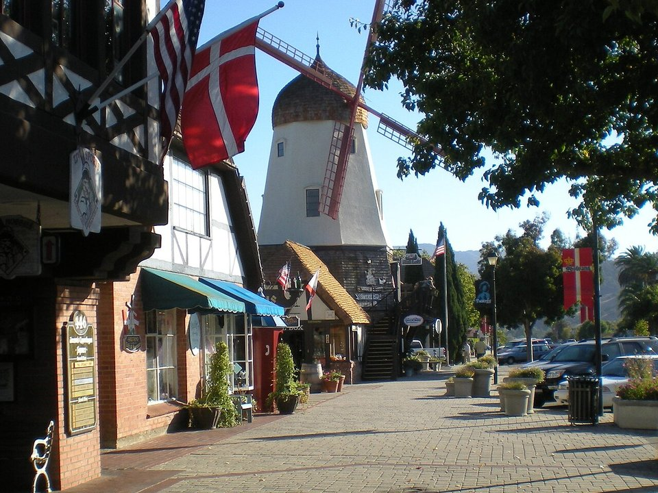

Los Olivos · Luxury inn
The Inn at Mattei’s Tavern
An Auberge inn around an 1886 stagecoach stop.
Official details for The Inn at Mattei’s TavernDanish pastries and Santa Barbara wine.
Solvang was founded by Danish settlers in 1911, and its windmills, half-timbered bakeries and gift shops sit in the middle of the Santa Ynez Valley wine country. Land at Santa Ynez Airport a few minutes away, stay at a boutique hotel in Solvang or at the Inn at Mattei’s Tavern in Los Olivos, taste along Los Olivos’s main street, have dinner at the Hitching Post II from the movie “Sideways,” and visit the 1804 Mission Santa Inés.

In our plane it’s a short flight.
Where we’re staying Dinner Things to do The plan
I’ll handle the flight planning; you handle the fun planning!
Time illustration: direct distance at 150 KTAS plus 15 minutes for departure and arrival, matching the discovery page. Use ForeFlight for your actual flight plan.
Check the weekend weather at both ends → Flight category, your minimums and the crosswind on the best runway.
More in Aviation & getting around below. Crew cars change often: call the FBO before you go. How to have a rental car waiting at the FBO · Know something we missed? Tell us.
IZA, Santa Ynez Airport/Kunkle Field, is a non-towered county airport at 674 feet with a 2,803-foot runway, about five minutes from Solvang.
Santa Ynez Airport, Santa Ynez, CA
A short runway with glider operations off the dirt approach zone to Runway 26; noise-abatement heading on departure from Runway 26 when safe. Santa Maria (KSMX) and Santa Barbara (KSBA) have long runways about 30–40 minutes away. No live fuel price is shown.
Southern California flying: coastal marine layer and low ceilings on many mornings (especially May to July), Santa Ana winds and turbulence in fall, busy Los Angeles airspace, and mountains between the coast and the desert. About 2030 nm from Myrtle Beach: two long days each way with several fuel stops. Plan a week, or overnight on the way out and back.
Rates and availability need travel dates. Book weekends early.
An Auberge inn around an 1886 stagecoach stop.
Official details for The Inn at Mattei’s TavernA design-forward boutique hotel in the village.
Official details for The LandsbyA modern hotel in the heart of Solvang.
Official details for Corque HotelA luxury guest ranch with riding and golf.
Official details for Alisal RanchA small inn among the vineyards.
Official details for The Ballard InnPrices and availability for your dates, through our partner Stay22. This is an affiliate link: we may earn a commission at no cost to you. The picks above are never paid.
Reserve weekend dinners.
Oak-grilled steaks and their own Pinot Noir in Buellton.
Official details for The Hitching Post IISeafood and small plates in Los Olivos.
Official details for Bar Le CôtéWood-fired plates and a butcher shop in Buellton.
Official details for Industrial EatsTasting rooms are busiest on Saturday afternoons.
This prototype links to the local visitor site. It does not yet match events to your travel dates.
Crush season in the valley.
Santa Ynez Valley Wine Country for HarvestSolvang’s Danish festival.
Visit Solvang for Danish DaysMild weather most of the year.
Santa Ynez Valley Wine Country for Wine tastingCheck the local calendar when choosing a weekend, and confirm dates and tickets with the organizer.
A sample wine-country weekend. This is a two-day flight each way; plan a week. No bookings or availability confirmed.
Land at IZA mid-morning.
Lunch in town.
A short walk, then back to the airport.
Land at IZA, subject to weather, density altitude and your actual flight plan.
Pastries and a walk around Solvang.
Dinner at Bar Le Côté.
Wine tasting with a driver.
Los Olivos tasting rooms.
Dinner at the Hitching Post II.
Mission Santa Inés.
Compute takeoff performance and allow time at the FBO.
Coastal fog lifts by late morning; afternoon winds build.
The main sight.
Explore.
Dinner in town.
This guide is part of a multi-stop flying trip. Set your dates and aircraft, then swap stops to make it your own.
These details make the difference between an appealing list and a usable getaway.
Lodging, then a wine driver.
About 2,030 nm from Myrtle Beach: two long days each way.
2,803 feet; use KSMX or KSBA if you need more.
April to November.
Picks and links reviewed by WingAway Weekends. Hours, prices, menus and availability change often, so confirm directly with each place before booking. Spotted something out of date, or have a favorite we missed? Email us at hello@wingawayweekends.com.
WingAway Weekends helps you discover the destination. Use ForeFlight and current official aviation information for route, performance, weather, NOTAMs and preflight decisions. Flight planning and PIC responsibility stay with the pilot.
One fly-in weekend, a Fly to Lunch pick and the newest guides, about once a month.
Free. Unsubscribe anytime.